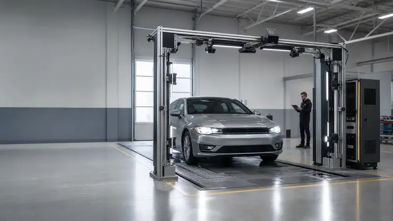

AI vision
Camera placement, lighting assumptions, frame capture, damage detection, leak evidence, tire condition, and confidence flags.
Robotics
Aerosyn is designed around the realistic first robot: a fixed vehicle-inspection station that observes, reasons, reports, and creates the data foundation for future service robotics.
Phase 1 boundary
Robot arms, force control, and arbitrary repair are hard. The first product avoids that risk and focuses on a bounded task with clear customer value: consistent vehicle inspection.

Capabilities
Camera placement, lighting assumptions, frame capture, damage detection, leak evidence, tire condition, and confidence flags.
NVIDIA Jetson-class inference target, local buffering, offline-capable operation, and practical shop deployment constraints.
Photo-backed inspection notes tied to vehicle context, OBD data, and human review.
Draft work orders, service-advisor queues, fleet readiness checks, API handoff, and audit trail planning.
Measure cycle time, false positives, advisor acceptance, customer trust, and ROI before scaling hardware.
Reviewed corrections become labeled data for better diagnostics and future robotic action.
Paid entry point
For a robot, workcell, deployment queue, service bay, support desk, or field operation that needs a clear first fix. Launch price: $750.
Request the sprint